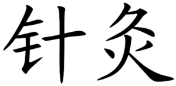

Akupunktura
Akupunktura to bezpieczna i efektywna metoda pomagająca w procesie zdrowienia każdego człowieka, wywodzącą się z Dalekiego Wschodu. Jej skuteczność poparta jest przez ponad cztery tysiące lat praktyki i badań.
Tak naprawdę nie ma znaczenia czy ktoś wierzy w akupunkturę czy nie, ona i tak działa, co często widzimy w naszym gabinecie i o czym świadczą opinie naszych pacjentów.
Obecnie akupunktura obejmuje swoim zasięgiem niemal cały świat i zyskuje sobie coraz więcej zwolenników zarówno wśród klientów jak i lekarzy. Współczesna medycyna zachodnia, pomimo wybitnych osiągnięć w dziedzinie diagnostyki i terapii, nadal jest bezradna wobec wielu chorób – także takich, w których akupunktura jest w stanie skutecznie pomóc.
W wielu krajach np. w Niemczech czy Szwajcarii zabiegi akupunktury są refundowane, ponieważ są tańsze od leczenia farmakologicznego, a wykazują się co najmniej porównywalną skutecznością przy mniejszej ilości działań niepożądanych.
Choć ojczyzną akupunktury są Chiny, szybko rozpowszechniła się w całym obszarze Dalekiego Wschodu. Metoda, którą my stosujemy, wywodzi się z Korei i zwana jest „Than Dza, Piong Po, Piong Sa” co znaczy „Silna, Natychmiastowa, Piorunująca”, bo często daje właśnie takie efekty.
Na czym polega i jak działa akupunktura?
Zabieg akupunktury polega na nakłuwaniu cienkimi sterylnymi igłami określonych punktów na ciele. Punkty te znajdują się wzdłuż 12 tzw. meridianów, czyli kanałów energetycznych zlokalizowanych w ciele człowieka. Poprzez te kanały płynie energia witalna zwana przez Chińczyków „Qi”. Zaburzenie przepływu energii w konkretnym kanale prowadzi do patologii w organizmie.
Nakłuwanie punktów ma więc na celu przywrócenie prawidłowego krążenia "Qi" i stymulowanie organów wewnętrznych człowieka. Dzięki temu organizm odzyskuje równowagę i jest zdolny do powrotu do zdrowia. Efekt terapeutyczny w leczeniu akupunkturą uzyskuje się poprzez wykorzystanie odruchów układu nerwowego organizmu klienta, co powoduje uruchomienie procesów samouzdrowienia.
Artykuł pochodzi ze strony www.akademialoknath.pl
Chcesz dowiedzieć się więcej o akupunkturze? Napisz lub zadzwoń: